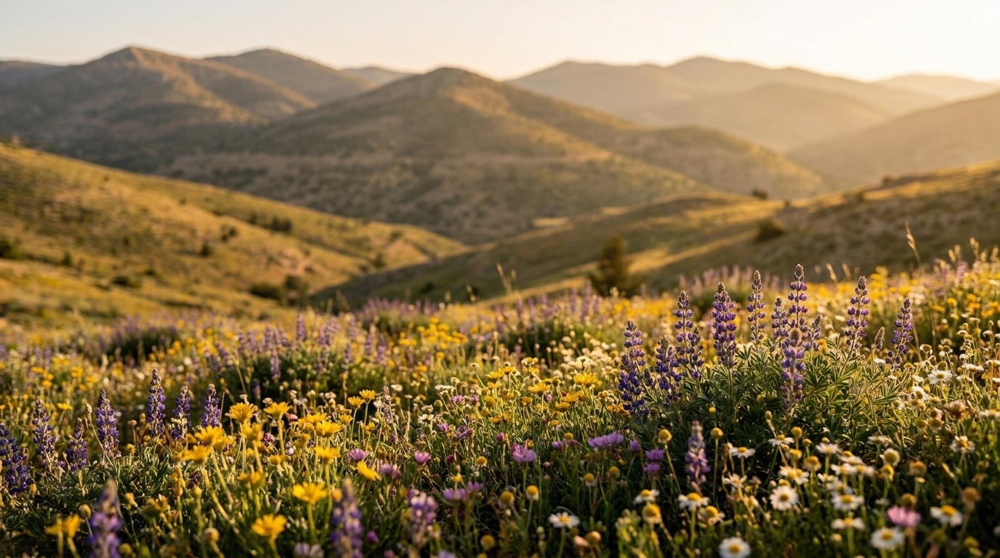
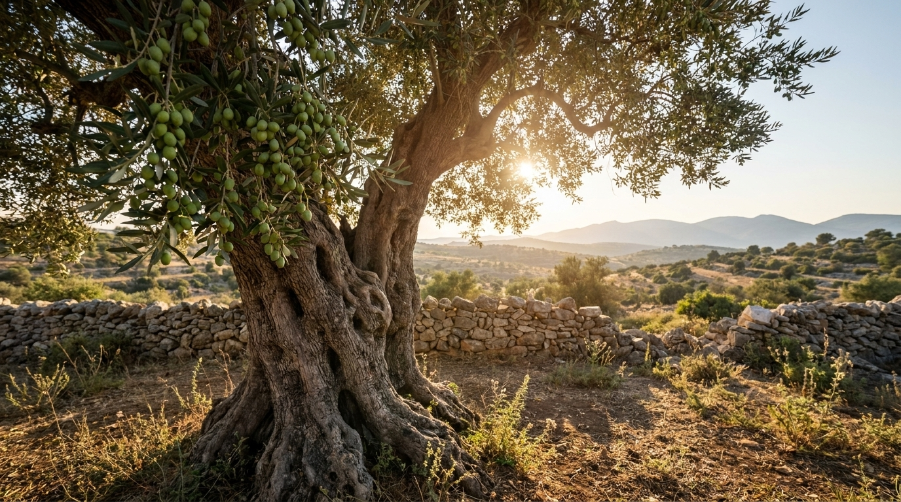

يتميز الأردن بتنوع بيئي وجغرافي فريد انعكس بشكل واضح على غناه النباتي، حيث تتدرج مناطقه من الأغوار المنخفضة إلى المرتفعات الجبلية ثم البادية الجافة. هذا التنوع أوجد بيئات مختلفة تحتضن مئات الأنواع من النباتات، بعضها بري طبيعي، وبعضها الآخر مزروع لأغراض غذائية أو طبية. وتُعد النباتات جزءاً أساسياً من التراث الطبيعي في الأردن، لما لها من دور في الحفاظ على التوازن البيئي ودعم الحياة البرية.

تُعد شجرة الزيتون من أهم وأشهر النباتات في الأردن، حيث تنتشر بشكل واسع في المناطق الشمالية والوسطى مثل إربد وعجلون. تمتاز هذه الشجرة بقدرتها على تحمل الظروف المناخية القاسية، وتُعتبر رمزاً للصمود والعراقة. كما أن زيت الزيتون الأردني يُعد من أجود الأنواع عالمياً، ويشكل جزءاً أساسياً من الاقتصاد المحلي والتراث الغذائي.
يحتضن الأردن مجموعة غنية من النباتات الطبية والعطرية مثل الزعتر، والميرمية، والبابونج. تنتشر هذه النباتات في المناطق الجبلية والريفية، وتُستخدم منذ القدم في الطب الشعبي والعلاجات الطبيعية. ولا يقتصر دورها على الاستخدامات الطبية فقط، بل تُعد أيضاً جزءاً من الثقافة الغذائية، حيث تدخل في تحضير العديد من الأطعمة التقليدية.